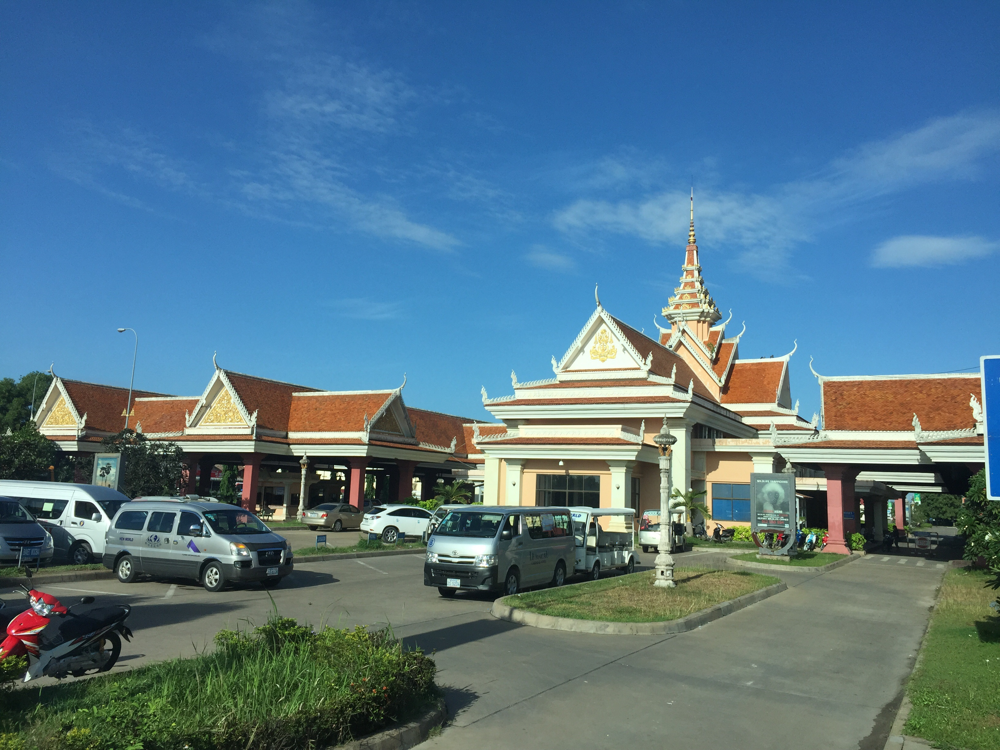

Svay Rieng (Khmer: ស្វាយរៀង 'The Mango's Range') is a province (khaet) in Cambodia. Located in the southeast, the province juts into Vietnam (Long An and Tây Ninh), which surrounds it to the north, east and south. The only other Cambodian province to border Svay Rieng is Prey Veng. The capital is Svay Rieng while the largest city is Bavet, which is the international border between Cambodia and Vietnam.
